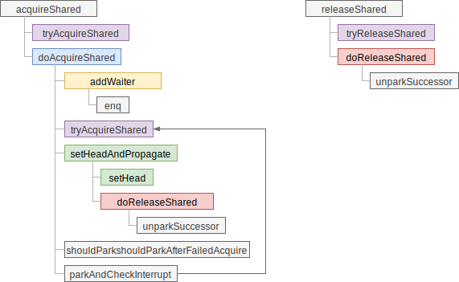
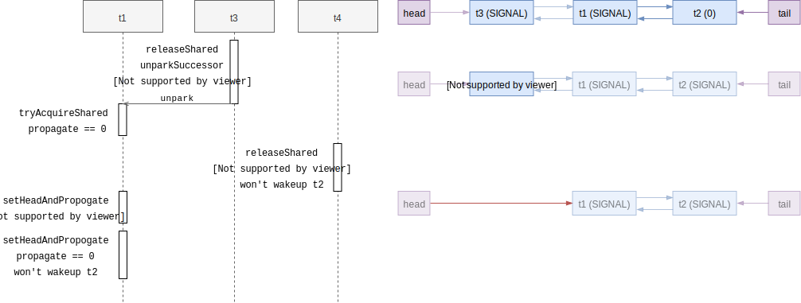

共享锁
共享锁与互斥锁的区别在于，共享锁在同一时间能被多个线程持有，不过 AQS 中加锁条件的判断已经抽象成 tryAcquireShared 操作了，由具体的实现类实现。AQS 只负责唤醒等待共享锁的线程。
为了标识一个节点是在哪种模式（互斥/共享）下工作，Node 类需要增加额外的标识：
static final class Node {
static final Node SHARED = new Node();
static final Node EXCLUSIVE = null;
static final int CANCELLED = 1;
static final int SIGNAL = -1;
static final int CONDITION = -2;
static final int PROPAGATE = -3;
volatile int waitStatus;
Node nextWaiter;
// ...
}
当 nextWaiter 等于预定义的 SHARED 时认为是在共享模式下工作，后续也被用在条件变量的等待队列中。共享锁模式下节点有多种状态，用 waitStatus 存储，跟共享锁有关的主要有：
SIGNAL，代表后继节点被阻塞了，当前节点释放后需要唤醒后继节点- 为了避免竞态条件，抢锁时应先把 prev 节点的状态改成 SIGNAL，尝试抢锁，失败时再阻塞
PROPAGATE，只在 head 节点设置，代表有共享锁释放，需要唤醒后续共享节点CANCELLED，用于取消等待，抢锁出错或线程中断时使用
调用关系
粗粒度的调用关系如下：

抢共享锁
抢共享锁的操作由 doAcquireShared 方法完成，它和互斥锁的 acquireQueued 的主要结构类似：
private void doAcquireShared(int arg) {
// 创建一个共享模式的节点并加入等待队列
final Node node = addWaiter(Node.SHARED);
boolean failed = true;
try {
boolean interrupted = false;
for (;;) {
final Node p = node.predecessor();
if (p == head) { // 当前节点为 head 的后继时才尝试抢锁
int r = tryAcquireShared(arg);
if (r >= 0) {
// 抢锁成功，需要释放 head 节点
// 需要看情况唤醒后续的节点，如还有其它可用共享锁
setHeadAndPropagate(node, r);
p.next = null; // help GC
if (interrupted)
selfInterrupt();
failed = false;
return;
}
}
// 看情况休眠，可能会在锁释放或接收到中断时被唤醒
if (shouldParkAfterFailedAcquire(p, node) &&
parkAndCheckInterrupt())
interrupted = true;
}
} finally {
if (failed)
cancelAcquire(node); // 失败时需要取消操作，此处先省略不谈
}
}
doAcquireShared 和 acquireQueued 整体逻辑结构判别不大，都是在循环里抢锁，成功则释放 head 节点，失败则进入休眠。不过有一个区别是是 doAcquireShared 使用了 tryAcquireShared 抢共享锁，返回负值代表抢锁失败，正值代表剩余多少锁。
唤醒后继节点
在行为上 doAcquireShared 与 acquireQueued 不同的一点是成功抢锁后，调用的是
setHeadAndPropagate 方法，除了释放当前的 head 节点，还会看情况唤醒后续的节点，这样才能保证多余的锁也能被等待线程抢到。
private void setHeadAndPropagate(Node node, int propagate) {
Node h = head; // Record old head for check below
setHead(node);
if (propagate > 0 // ① 明确知道还有锁可用
|| h == null || h.waitStatus < 0 // ② 老 head 处于特殊状态
|| (h = head) == null || h.waitStatus < 0) { // ③ 新 head 处于特殊状态
Node s = node.next;
if (s == null || s.isShared()) // ④ 后继节点是共享模式
doReleaseShared();
}
}
doReleaseShared 方法用来释放共享锁，在锁释放时也会被调用，它会根据 head 节点的状态来唤醒后继节点。我们看看 doReleaseShared 的具体实现：
private void doReleaseShared() {
for (;;) {
Node h = head;
if (h != null && h != tail) {
int ws = h.waitStatus;
if (ws == Node.SIGNAL) { // ① 正常唤醒后继节点
if (!compareAndSetWaitStatus(h, Node.SIGNAL, 0)) // 清除 SIGNAL 状态
continue; // CAS 修改状态失败，重试
unparkSuccessor(h);
}
else if (ws == 0 && // ② 设置成 PROPAGATE，确保唤醒操作能传播
!compareAndSetWaitStatus(h, 0, Node.PROPAGATE))
continue; // CAS 修改状态失败，重试
}
if (h == head) // 如果 head 节点变化了，则继续循环
break;
}
}
代码 ① 处判断 head 节点处于 SIGNAL 状态，说明后继节点在等待唤醒，于是调用
unparkSuccessor 唤醒节点。② 处则是将节点设置成 PROPAGATE 状态后退出。那么
PROPAGATE 状态有什么用呢？
PROPAGATE 状态的作用
跟释放互斥锁一样，释放共享锁时需要唤醒后继的节点，不同的是同一时间可能有多个共享锁被释放，但唤醒操作只能一个一个进行。需要唤醒多少线程由
tryAcquireShared 的返回值指定，且由下一个尝试抢锁的线程在
setHeadAndPropagate 方法中通过调用 doReleaseShared 执行唤醒操作。
但是被唤醒的线程 T 调用 tryAcquireShared 方法得知需要唤醒多少个线程，与执行唤醒操作之间有延迟，如果这个过程中有其它的锁释放了，则线程 T 执行唤醒时无法知晓，就会造成逻辑错误。在早期的实现中，setHeadAndPropagate 并没有 PROPAGATE 状态，就会有这个问题。早期实现的代码如下：
private void setHeadAndPropagate(Node node, int propagate) {
setHead(node);
if (propagate > 0 && node.waitStatus != 0) {
Node s = node.next;
if (s == null || s.isShared())
unparkSuccessor(node);
}
}
对应的， releaseShared 方法中也没有 PROPAGATE 的相关判断：
public final boolean releaseShared(int arg) {
if (tryReleaseShared(arg)) {
Node h = head;
if (h != null && h.waitStatus != 0)
unparkSuccessor(h);
return true;
}
return false;
}
在这种实现下，考虑队列中有 t3(head) -> t1 -> t2(tail) 三个节点，t3 与不在队列中的 t4拥有锁，t3 与 t4 先后释放锁，则在下面的时序里，t1 和 t4
都不会尝试唤醒t2：

问题时序如下1：
t3锁释放，调用releaseShared后调用unparkSuccessor将head的状态置为0t1被唤醒，调用tryAcquireShared尝试抢锁，返回0，代表无多余的锁t4释放锁，调用releaseShared，读到head.waitStatus == 0（与 #1 中 head 相同），不满足waitStatus != 0的条件，不做唤醒操作。t1抢锁成功，调用setHeadAndPropagate，此时propagate == 0，没有多余的锁，于是也不做唤醒操作
最终结果是 t4 的锁释放了，却不唤醒任何后续节点，锁释放了，却没有线程被唤醒抢锁。
因此，在 t1 的 setHeadAndPropagate 要唤醒后续节点时，不能只依赖 propagate
的值，这个值可能是旧的数据。在调用 tryAcquireShared 到释放 head 节点这断期间里释放锁的线程，需要“告知”被唤醒的线程，不管 propagate 的值是什么，都要尝试唤醒后面的线程，因为有新的锁被释放了。这也就是当前的 setHeadAndPropagate 逻辑中复杂的 if 条件的来由了。